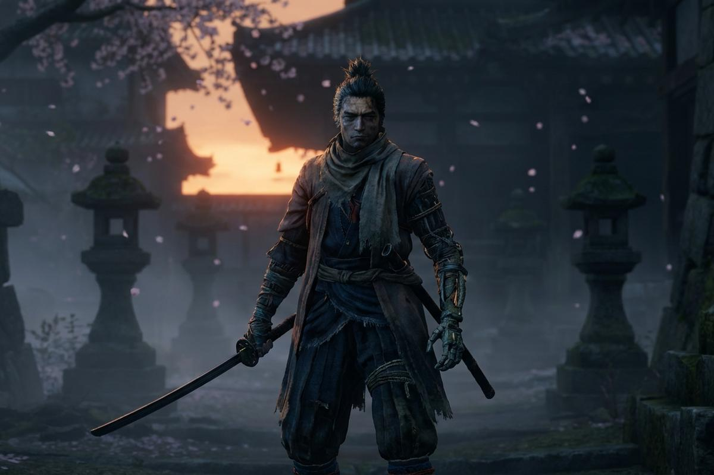

ИНФОРМАЦИЯ
Рассказать об истории, персонажах, боссах и особенностях Sekiro.
SEKIRO / PROJECT ARCHIVES / 2026
Этот сайт — путешествие в мир Sekiro: Shadows Die Twice. Проект объединяет историю игры, легендарных боссов, уникальную боевую систему и атмосферные локации феодальной Японии.
ИССЛЕДОВАТЬ ПРОЕКТ ↗01 / INTRODUCTION
Sekiro: Shadows Die Twice — игра, созданная студией FromSoftware, действие которой разворачивается в вымышленной Японии эпохи Сэнгоку.
Цель этого учебного проекта — познакомить посетителей с миром Sekiro и представить информацию об игре в современном, удобном и атмосферном формате.
Для оформления использованы тёмные оттенки, японские мотивы, изображения игры и плавные визуальные эффекты.

02 / OUR MISSION
Основные задачи, которые решает этот сайт.
Рассказать об истории, персонажах, боссах и особенностях Sekiro.
Передать настроение игры через изображения, цвета, типографику и анимации.
Применить HTML, CSS и JavaScript для создания интерактивного веб-сайта.
03 / TECHNOLOGIES
Инструменты, используемые для создания сайта.
Структура страниц, меню и содержимое.
Цвета, изображения, адаптация и дизайн.
Интерактивные эффекты и поведение страниц.
04 / EXPLORE THE WEBSITE
Перейди в любой раздел сайта.
THE JOURNEY CONTINUES
Открой для себя мир синоби.
ВЕРНУТЬСЯ НА ГЛАВНУЮ ↗